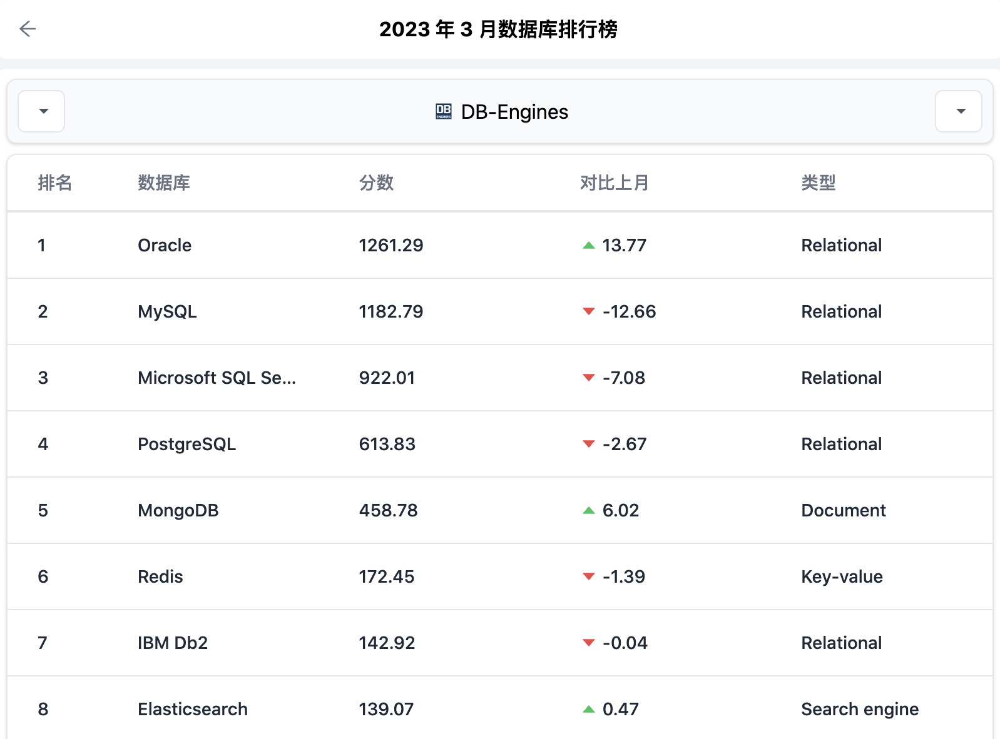
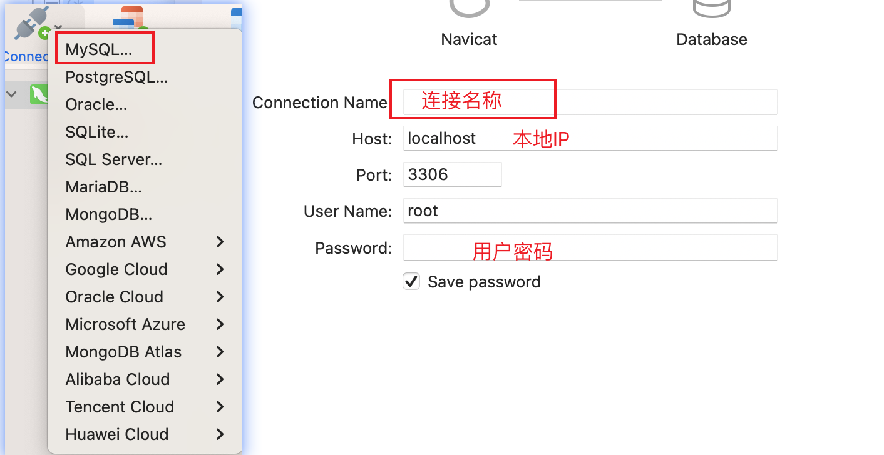
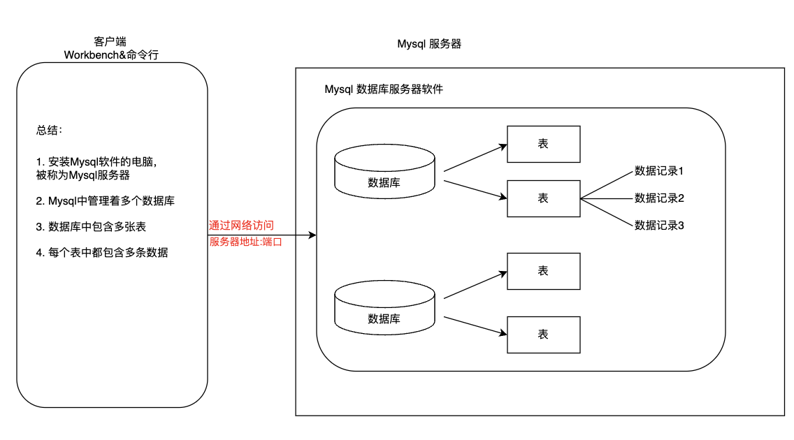
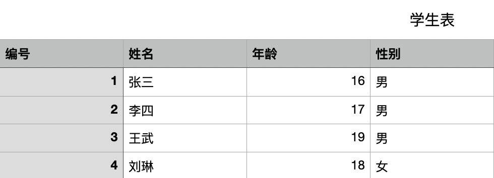

MySQL
霍格沃兹测试开发学社
目录
- 数据库基本概念
- MySQL安装配置
- MySQL数据库登录
- 数据库管理系统
- SQL
- DDL操作数据库
- DDL操作数据表
Question
- user.txt。
id name age
1 张三 15
2 李四 16
3 王五 17
4 赵六 18
5 孙启 19
数据库基本概念
- 什么是数据库
- 为什么使用数据库
- 常见数据库
什么是数据库
- 存储和管理数据的仓库。
- 本质是一个文件系统。
为什么使用数据库
| 存储方式 | 优点 | 缺点 |
|---|---|---|
| 内存 | 数据读取速度快 | 不能够永久保存,数据是临时状态的 |
| 文件 | 数据可永久保存 | IO流操作文件，获取修改不方便 |
| 数据库 | 1.数据可永久保存 2.数据的存储和管理方便 3.统一的方式对数据进行操作 |
占资源，有些付费 |
常见数据库

MySQL安装配置
Mac-MySQL启动与关闭
- 系统偏好设置
- 点击 MySQL 图标
- 点击 Start MySQL Server 启动服务
- 点击 Stop MySQL Server 关闭服务

Mac-命令行启动与关闭
-
服务启动：
sudo /usr/local/mysql/support-files/mysql.server start # 配置环境变量后 sudo mysql.server start -
服务关闭：
sudo /usr/local/mysql/support-files/mysql.server stop # 配置环境变量后 sudo mysql.server stop
Window-DOS命令方式启动
-
首先以管理员身份 打开命令行窗口：
-
启动MySql
net start mysql -
关闭MySql
net stop mysql

MySQL数据库登录
- 命令行登录/退出
- Workbench使用
命令行登录/退出
-
登录：
# 使用指定用户名和密码登录当前计算机中的MySQL数据库 mysql -u用户名 -p密码 # -h 指定IP方式，进行登录 mysql -h主机IP -u用户名 -p密码 -
退出：
exit; # 或者 quit;
Navicat使用
安装： Navicat

数据库管理系统
- 什么是数据库管理系统
- 数据库管理系统、数据库和表的关系
- 数据库表
什么是数据库管理系统
数据库管理系统(DataBase Management System，DBMS)：指一种操作和管理维护数据库的大型软件。
数据库管理系统、数据库和表的关系

数据库表

SQL
- 什么是SQL
- SQL通用语法
什么是SQL
结构化查询语言(Structured Query Language)简称SQL，它是一种特殊目的的编程语言，它的目的就是用来操作关系型数据库。
SQL通用语法
-
SQL语句可以单行 或者 多行书写，以分号 结尾
;。 -
可以使用空格和缩进来增加语句的可读性。
-
MySql中使用SQL不区分大小写。一般关键字大写，数据库名、表名、列名小写。
练习
在Navicat上练习注释并分别运行截图。
SQL的分类
- 数据定义语言：
- DDL(Data Definition Language)，用来定义数据库对象:数据库，表，列 等。
- 数据操作语言：
- DML(Data Manipulation Language)，用来对数据库中表的记录进行更新。
- 数据查询语言：
- DQL(Data Query Language)，用来查询数据库中表的记录。
- 数据控制语言：
- DCL(Date Control Language)，用来定义数据库的访问权限和安全级别，及创建用户。
SQL的分类

DDL操作数据库
数据库的创建、查看、选择、修改、删除。
DDL创建数据库
- 命令模版：「见右侧🫱」
- 练习：
- 创建名为jd的数据库。
- 创建名为wechat的数据库并指定字符集为utf-8。
-- 创建指定名称的数据库。
create database 数据库名;
-- 创建指定名称的数据库，
-- 并且指定字符集(一般都指定utf-8)
create database 数据库名 character set 字符集;
DDL查看/选择数据库
- 命令模版：「见右侧🫱」
- 练习：
- 查看当前正在使用的数据库。
- 使用jd数据库。
- 数据库从jd 切换到 wechat。
- 查看Mysql中有哪些数据库。
-- 切换数据库
use 数据库
-- 查看当前正在使用的数据库
select database();
-- 查看Mysql中都有哪些数据库
show databases;
-- 查看一个数据库的定义信息
show create database 数据库名;
DDL修改数据库
- 命令模版：「见右侧🫱」
- 练习：
- 将数据库jd 的字符集 修改为 utf8。
- 查看当前正在使用的数据库。
-- 数据库的字符集修改操作
alter database 数据库名 character set 字符集;
DDL删除数据库
- 命令模版：「见右侧🫱」
- 练习：
- 将数据库 wechat 删除。
-- 从MySql中永久的删除某个数据库
drop database 数据库名
DDL 操作数据表
数据表的创建、查看、修改、删除。
MySQL常见的数据类型
| 类型 | 描述 |
|---|---|
| int | 整型 |
| double | 浮点型 |
| varchar | 字符串型 |
| date | 日期类型，给是为 yyyy-MM-dd ,只有年月日，没有时分秒 |
char与varchar区别
-
char类型是固定长度的。
- 适合存储 固定长度的字符串，比如：密码 ，性别一类。
-
varchar类型是可变长度的。
- 适合存储 在一定范围内，有长度变化的字符串。
创建表
- 命令模版：「见右侧🫱」
- 最后一列不要加逗号。
CREATE TABLE 表名(
字段名称1 字段类型(长度)，
字段名称2 字段类型
);
创建商品分类表
- 表名：
category。 - 表中字段:
- 分类ID：
cid,为整型。 - 分类名称：
cname，为字符串类型，指定长度20。
- 分类ID：
创建测试表
- 表名：
test1。 - 表中字段:
- 测试ID：
tid,为整型。 - 测试时间：
tdate, 为年月日的日期类型。
- 测试ID：
复制表结构
-
命令模版：「见右侧🫱」
- 快速创建一个表结构相同的表。
-
需求：
- 创建一个表结构与 test1 相同的 test2表。
- 查看表test2结构。
create table 新表明 like 旧表名
查看表
- 命令模版：「见右侧🫱」
-- 查看当前数据库中的所有表名
show tables;
-- 查看数据表的结构
desc 表名;
查看商品分类表
- 查看当前数据库中的所有表名。
- 显示商品分类表
category的结构。 - 查看创建表
category的SQL语句。
查看测试表
- 查看当前数据库中的所有表名。
- 显示测试表
test1的结构。 - 查看创建表
test1的SQL语句。
删除表
- 命令模版：「见右侧🫱」
- 需求：
- 直接删除test1表。
- 先判断test2是否存在，存在的话就删除test2表。
-- 删除表(从数据库中永久删除某一张表)
drop table 表名;
-- 判断表是否存在， 存在的话就删除,不存在就不执行删除
drop table if exists 表名;
修改表
- 修改表名
- 修改表的字符集
- 向表中添加列
- 修改列名称
- 删除列
修改表名
- 命令模版：「见右侧🫱」
- 需求：
- 将
category表名改为category2。 - 将
test2表名改为test01。
- 将
rename table 旧表名 to 新表名
修改表的字符集
- 命令模版：「见右侧🫱」
- 需求：
- 将
category2表的字符集 修改为gbk。
- 将
alter table 表名 character set 字符集
向表中添加列
- 命令模版：「见右侧🫱」
- 需求：为表category添加一个新的字段。
- 分类描述：cdesc。
- 分类描述的数据类型：varchar(20)。
alert table 表名 add 字段名称 字段类型
修改列数据类型或长度
- 命令模版：「见右侧🫱」
- 关键字：MODIFY
- 需求：对表category的描述字段cdesc进行修改。
- 数据类型改为char(50)。
- 数据类型长度改为varchar(50)。
alter table 表名 modify 字段名称 字段类型
修改列名称
- 命令模版：「见右侧🫱」
- 关键字：CHANGE
- 需求：对表category中的 desc字段进行更换。
- 更换为 description varchar(30)。
alter table 表名 change 旧列名 新列名 类型(长度);
删除列
- 命令模版：「见右侧🫱」
- 关键字：DROP
- 需求：删除表category中description这列。
alter table 表名 drop 列名;